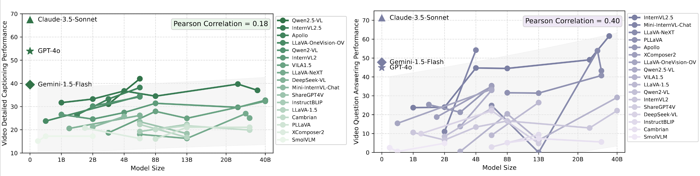
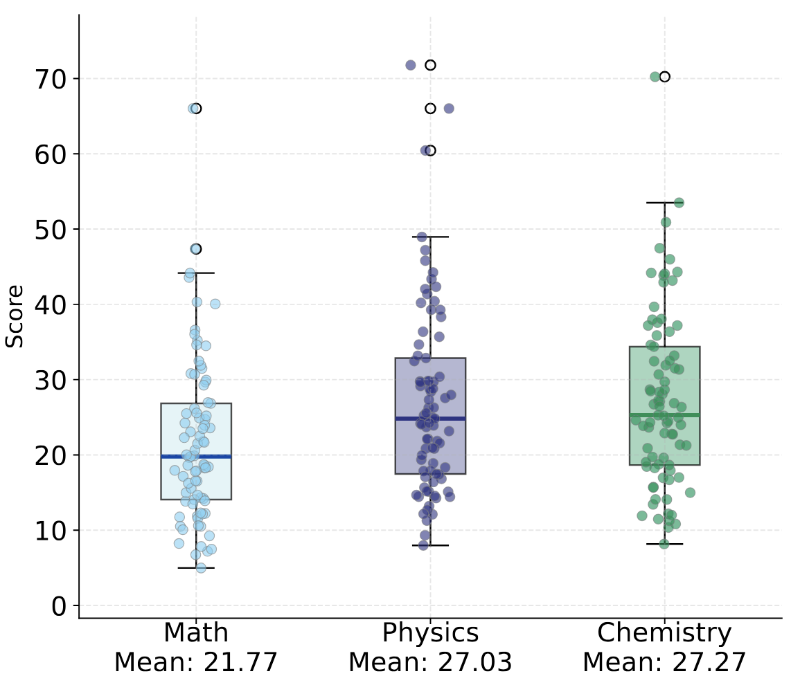
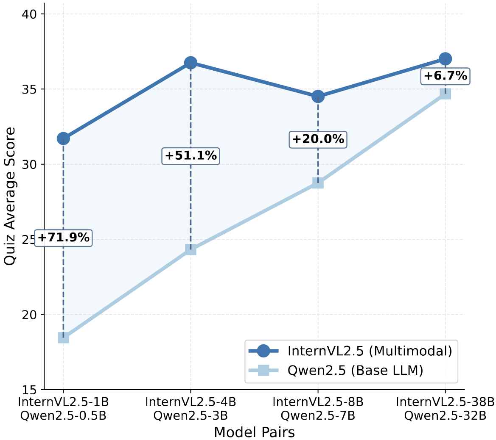

Class is in session! Submit your scores to see if your models make the honor roll. Professor is waiting...
Please remember to report your frame rate and tokens per frame with each submission.
Email us at or .
#F stands for the frame sampling number of the input video, and #T stands for the visual tokens per frame.
Models marked with are open-source, those marked with are proprietary, and those marked with are base LLMs.
Findings
Finding 1. Large scale LMMs do not show clear advantages over smaller ones.
Although LMM scaling laws suggest significant performance improvements with increased model size, this trend is less pronounced in Video-MMLU.
Model size shows a stronger correlation with performance in video QA compared to video captioning, implying reasoning benefits more from scaling.

Finding 2. LLM Architecture shapes LMMs' balance between perception and reasoning.
Most models excel in captioning over QA, highlighting the greater reasoning challenge lecture QA in Video-MMLU.
LMMs built on Qwen2.5 and InternLM2.5 achieve strong and balanced performance, while MoE-based LLMs also perform well.
Earlier architectures like Vicuna and LLaMA2 perform poorly in QA for its weaker reasoning and instruction-following capabilities.
Finding 3. Can LMMs with visual token compression sustain strong performance in complex, context-rich lecture understanding tasks like Video-MMLU?
Token compression boosts efficiency but still lags significantly behind SOTA models.
Architecture and compression are as crucial as token count, affecting performance variance.
Significant token reduction works while maintaining performance, but ultra-low counts cause sharp drops.
16–300 tokens per frame is the optimal efficiency-performance balance.
Larger models can partially offset compression's information loss.
AuroraCap's non-linear curve shows the need for domain-specific token optimization.
Finding 4. Lecture understanding in models relies more on textual content in frames than on animations.
Models significantly excel in physics and chemistry lectures, which contain more textual explanations, while mathematics lectures emphasizes formulas and dynamic visual proofs.

Finding 5. Larger LLMs enhance lecture understanding but with diminishing returns.
As model size increases, Qwen2.5 exhibits continuous performance gains, while InternVL2.5 (Qwen2.5 as LLM) gains gradually diminish with increasing model size.

Lecture Cases
"MVPs: Wordless Animations of Five Classic Proofs without Words" presents an intricate journey through mathematical concepts using purely visual demonstrations. The video opens with a stark black background featuring the title and subtitle, accompanied by a subscribe button and thumbs-up icon, setting the stage for an engaging educational experience.
The presentation begins with a foundational exploration of geometric series, displaying the mathematical expression \( \frac{1}{2} + \frac{1}{4} + \frac{1}{8} + \ldots + \frac{1}{2^k} + \ldots \). This infinite series is beautifully illustrated through a square divided into colored sections, where the left half is colored in deep purple representing \( \frac{1}{2} \), while the remaining space is partitioned into increasingly smaller sections in teal and purple, labeled with fractions \( \frac{1}{4} \), \( \frac{1}{8} \), \( \frac{1}{16} \), and \( \frac{1}{32} \). The visual demonstrates how these fractions collectively sum to 1, with each subsequent fraction representing half of the previous one.
The video then transitions to exploring the sum of the first n natural numbers, presenting the equation \( 1 + 2 + 3 + \ldots + n = \frac{n(n + 1)}{2} \). This concept is visualized through a triangular arrangement of light blue squares, forming a right triangle pattern where each row contains one more square than the row above it. The dimensions are carefully labeled with n, demonstrating the relationship between the height and base of the triangle.
A particularly elegant proof involves the difference of squares formula, \( a^2 - b^2 = (a - b)(a + b) \). This is demonstrated through multiple visual representations, including a large purple square representing \( a^2 \) and a smaller square representing \( b^2 \), with the difference illustrated through L-shaped sections and rectangular divisions. The dimensions are clearly labeled with a and b, showing how the factored form relates to the geometric representation.
The Pythagorean theorem receives special attention through a series of illustrations, including a light blue right triangle with sides labeled a, b, and c, accompanied by the classic equation \( c^2 = a^2 + b^2 \). This is further elaborated through a square grid divided into four sections, with colored squares in purple and light blue demonstrating the relationship between the areas of squares formed by the triangle's sides.
The presentation also explores the sum of odd numbers through the equation \( 1 + 3 + 5 + ... + (2n - 3) + (2n - 1) = n^2 \), using a grid of green and light blue squares to demonstrate how odd numbers sum to perfect squares. Each step in the progression is carefully illustrated through staircase-like arrangements of colored squares.
Throughout the video, minimalist black silhouettes of standing figures appear at key transitions, suggesting a lecture-style presentation. A simple light bulb illustration also appears, symbolizing moments of insight or understanding. The presentation concludes by attributing these proofs to various historical figures, including ancient Greeks, Chinese mathematicians, Nicomachus of Gerasa, and Warren Page.
Each proof is meticulously constructed using a consistent color palette of purples, blues, and teals against a black background, ensuring maximum visibility and clarity. The visual elements are carefully labeled with appropriate mathematical notation, creating a seamless blend of geometric and algebraic representations that effectively communicate complex mathematical concepts without the need for words.
The educational video on osmosis and tonicity, produced by Ricochet Science, presents a comprehensive exploration of these fundamental biological processes through clear visual elements and detailed explanations.
The presentation opens with a bold black title against a white background, immediately followed by the distinctive Ricochet Science logo featuring a stylized laboratory flask with rising bubbles in black and teal, establishing its educational context.
At its core, the video establishes that osmosis represents the diffusion of water across a semipermeable membrane, while tonicity refers to the relative solute concentration between two environments separated by such a membrane.
This foundational concept is illustrated through a detailed central diagram showing a semipermeable membrane dividing two distinct environments.
The left side, labeled "Hypotonic Environment," contains a solution of 25% sodium chloride and 75% water, while the right side, labeled "Hypertonic Environment," shows 75% sodium chloride and 25% water.
The diagram uses color-coded spheres - blue for water molecules, purple for sodium ions (Na⁺), and orange for chloride ions (Cl⁻) - to clearly demonstrate molecular composition.
Yellow arrows indicate the fundamental principle that water molecules move from the hypotonic to the hypertonic environment, always flowing toward areas of higher solute concentration.
The presentation then explores three critical scenarios using beakers containing red blood cells in different solutions.
In the first scenario, red blood cells are suspended in pure water (a hypotonic solution).
The video explains that the cells' internal environment is hypertonic relative to the surrounding water, causing water to flow into the cells through osmosis.
This influx of water can potentially lead to cell lysis, or bursting, if sufficient water enters the cells.
The second scenario demonstrates the opposite condition, where red blood cells are placed in a hypertonic sodium chloride solution (represented by blue liquid).
This environment causes crenation, or cell shrinkage, as water moves out of the cells toward the more concentrated external solution.
The third scenario illustrates isotonic conditions, where the solution's tonicity matches that of the cells, resulting in no net water movement and maintaining cellular stability.
Throughout the presentation, these concepts are reinforced against a gradient purple background that enhances visibility and comprehension.
The semipermeable membrane is consistently depicted as a selective barrier, allowing water passage while restricting other substances.
This selective permeability is crucial for understanding cellular homeostasis and various physiological processes, including kidney function and the effects of diseases like diabetes, which the video briefly mentions as practical applications of these principles.
The comprehensive visual journey concludes with the Ricochet Science logo and copyright information from Ricochet Creative Productions, LLC (2013), maintaining its professional educational approach throughout.
The presentation effectively combines theoretical concepts with practical examples, helping viewers understand how osmosis and tonicity influence cellular behavior in various environmental conditions, making complex biological processes accessible to learners at different levels.
"MVPs: Wordless Animations of Five Classic Proofs without Words" presents an intricate journey through mathematical concepts using purely visual demonstrations. The video opens with a stark black background featuring the title and subtitle, accompanied by a subscribe button and thumbs-up icon, setting the stage for an engaging educational experience.
The presentation begins with a foundational exploration of geometric series, displaying the mathematical expression \( \frac{1}{2} + \frac{1}{4} + \frac{1}{8} + \ldots + \frac{1}{2^k} + \ldots \). This infinite series is beautifully illustrated through a square divided into colored sections, where the left half is colored in deep purple representing \( \frac{1}{2} \), while the remaining space is partitioned into increasingly smaller sections in teal and purple, labeled with fractions \( \frac{1}{4} \), \( \frac{1}{8} \), \( \frac{1}{16} \), and \( \frac{1}{32} \). The visual demonstrates how these fractions collectively sum to 1, with each subsequent fraction representing half of the previous one.
The video then transitions to exploring the sum of the first n natural numbers, presenting the equation \( 1 + 2 + 3 + \ldots + n = \frac{n(n + 1)}{2} \). This concept is visualized through a triangular arrangement of light blue squares, forming a right triangle pattern where each row contains one more square than the row above it. The dimensions are carefully labeled with n, demonstrating the relationship between the height and base of the triangle.
A particularly elegant proof involves the difference of squares formula, \( a^2 - b^2 = (a - b)(a + b) \). This is demonstrated through multiple visual representations, including a large purple square representing \( a^2 \) and a smaller square representing \( b^2 \), with the difference illustrated through L-shaped sections and rectangular divisions. The dimensions are clearly labeled with a and b, showing how the factored form relates to the geometric representation.
The Pythagorean theorem receives special attention through a series of illustrations, including a light blue right triangle with sides labeled a, b, and c, accompanied by the classic equation \( c^2 = a^2 + b^2 \). This is further elaborated through a square grid divided into four sections, with colored squares in purple and light blue demonstrating the relationship between the areas of squares formed by the triangle's sides.
The presentation also explores the sum of odd numbers through the equation \( 1 + 3 + 5 + ... + (2n - 3) + (2n - 1) = n^2 \), using a grid of green and light blue squares to demonstrate how odd numbers sum to perfect squares. Each step in the progression is carefully illustrated through staircase-like arrangements of colored squares.
Throughout the video, minimalist black silhouettes of standing figures appear at key transitions, suggesting a lecture-style presentation. A simple light bulb illustration also appears, symbolizing moments of insight or understanding. The presentation concludes by attributing these proofs to various historical figures, including ancient Greeks, Chinese mathematicians, Nicomachus of Gerasa, and Warren Page.
Each proof is meticulously constructed using a consistent color palette of purples, blues, and teals against a black background, ensuring maximum visibility and clarity. The visual elements are carefully labeled with appropriate mathematical notation, creating a seamless blend of geometric and algebraic representations that effectively communicate complex mathematical concepts without the need for words.
The video presents a sophisticated mathematical exploration of the expression √101 - √99, demonstrating an elegant approach to approximating the difference between two closely spaced square roots. Against a clean white background, a friendly cartoon character wearing glasses and a graduation cap serves as a mathematical guide, establishing the video's educational tone from the outset.
The presentation begins with a crucial insight into the rationalization process, emphasizing that this technique is essential for such expressions involving the difference of square roots. The video methodically demonstrates the rationalization by multiplying both numerator and denominator by (√101 + √99), a strategic step that transforms the expression into (√101 - √99)(√101 + √99) / (√101 + √99). This manipulation leverages the fundamental difference of squares formula, (a + b)(a - b) = a² - b², which appears highlighted in red to underscore its pivotal role. The numerator elegantly simplifies to 101 - 99 = 2, yielding the more manageable form 2/(√101 + √99).
The exploration then delves into a sophisticated analysis of bounds and properties. The video introduces the variable x to represent √101 + √99, and through careful algebraic manipulation, demonstrates that x² = 200 + 2√(100² - 1). This leads to a critical insight: since 100² - 1 represents numbers very close to 100², the expression can be bounded between 398 and 400. Through rigorous mathematical reasoning, the video establishes that x must lie between 19 and 20, as x² < 400 (20² = 400) and x² > 361 (19² = 361).
The presentation further enriches understanding by showing how (√101 + √99)² expands to 101 + 99 + 2√(101 × 99), demonstrating the interconnection between different algebraic forms. This expansion provides additional verification of the bounds previously established. The analysis culminates in proving that 2/x falls within the precise range of 0.1 < 2/x < 0.105, leading to the approximate value of √101 - √99 ≈ 0.1025.
Throughout the demonstration, visual aids enhance comprehension, with red arrows and color-coded inequalities guiding viewers through the mathematical relationships. A playful gray cat makes an endearing appearance, raising its paw in a friendly gesture, providing a moment of levity amidst the technical content. The video maintains its engaging approach while systematically building upon each concept, ensuring viewers grasp both the mathematical mechanics and the underlying reasoning.
The presentation concludes with a visually appealing closing frame, featuring a red "SUBSCRIBE" button in the top left corner alongside a notification bell icon. The word "thank you" appears in artistic purple and red lettering, incorporating a heart symbol, while a cartoonish blue hand makes an appreciative gesture against the white background. This thoughtful conclusion maintains the video's welcoming tone while reinforcing its educational value.
The entire presentation successfully combines rigorous mathematical analysis with accessible visual elements, making complex algebraic concepts more approachable while maintaining mathematical precision throughout the step-by-step exploration of transforming and bounding the expression √101 - √99.
In this detailed mathematical video presentation, we observe a young man seated in front of a light-colored wall with windows, wearing a distinctive plaid shirt and baseball cap throughout. He engages enthusiastically with his audience while explaining an intricate geometric problem involving three circles and their relationships within a rectangular boundary. His recent haircut, which he playfully mentions at the end, adds a personal touch to his professional demeanor.
The main problem, prominently displayed with the heading "Can you solve it?" and accompanied by a star icon, features three circles with diameters labeled as 3, 4, and 6 units. These circles are arranged within a rectangular framework, with the largest circle (diameter 6) determining the height of the rectangle. The problem's elegant setup demonstrates how these circles are tangent to each other and the rectangle's boundaries, creating an interesting geometric relationship that requires careful analysis to solve.
The instructor methodically develops the solution by first breaking down the unknown distance into two components, labeled as x and y. This decomposition proves crucial for solving the problem, as it allows for the application of the Pythagorean theorem to two separate right triangles. The circles' radii (1.5, 2, and 3 units respectively) play a fundamental role in establishing these relationships.
Throughout the video, the instructor develops the solution using several complementary diagrams. One diagram shows the circles with additional markings, including a fraction (2/6) and various dimensions labeled as 1.5, 3, 5, and 2. The problem is further elaborated using color-coding, with purple and green sections highlighting different parts of the solution path. Blue dashed lines indicate radii and measurements between key points, helping viewers follow the geometric reasoning.
The solution process involves multiple geometric and algebraic steps, beginning with the analysis of the two larger circles. A right triangle is introduced with sides labeled 1 and 5, leading to the Pythagorean theorem equation: 1² + y² = 5². This is followed by the simplification 1 + y² = 25, ultimately yielding y = 2√6. Another key calculation involves a right triangle with sides of 2.5 and 3.5 units, utilized to determine the value of x through the equation 2.5² + x² = 3.5², which leads to x = √6.
As the solution progresses, various measurements are revealed and analyzed, including segments marked as √6 and 2√6. The instructor carefully explains the relationships between these measurements, using vertical and horizontal lines to demonstrate connections. Green lines are employed to highlight specific measurements, particularly when dealing with the length marked as 5 units and the variable y.
The mathematical working shows particular attention to detail in handling square roots and simplification. The process of simplifying √24 into 2√6 is clearly explained, demonstrating important algebraic techniques. The final solution elegantly combines the two components (x + y) to arrive at 3√6, which represents the total distance in question.
The video culminates with the complete solution, showing how all the geometric relationships and measurements come together. The final diagrams display both the initial problem setup and the solved configuration, with all relevant measurements clearly labeled, including the conclusive proof that the unknown length equals 3√6. The instructor's animated and friendly demeanor helps maintain viewer engagement throughout this complex mathematical journey, all while staying in his consistent position in front of the light-colored wall with windows visible in the background. His step-by-step approach, combined with clear visual aids and enthusiastic presentation style, makes this challenging geometric problem accessible and engaging for viewers.
"THIS IS MF DOOM" presents an intricate mathematical exploration set against a stark black background, where complex mathematical concepts are woven together with cultural references to the legendary rapper and producer MF DOOM. Throughout the presentation, a bold title consistently anchors each frame, serving as a reminder of the unique intersection between mathematics and musical artistry.
The video begins by introducing a fundamental mathematical series, presenting the expression (1 - p) + p(1 - p) + p²(1 - p) + p³(1 - p) + ..., which equals 1. This foundational series emerges from a recursive process of repeatedly dividing the rightmost piece into fixed proportions, demonstrating how mathematical patterns can arise from simple iterative procedures. The related geometric series 1 + p + p² + p³ + ... simplifies to 1/(1 - p), a crucial result that underlies much of the subsequent analysis. The presentation carefully explains that this series "makes sense for almost any value of p," though the initial derivation only applies for values between 0 and 1.
A significant portion of the video focuses on a probability distribution displayed on a number line ranging from 0 to 1. The line features crucial expressions involving the variable p and its complement (1 - p), with specific attention paid to terms like (1 - p), p(1 - p), p²(1 - p), p³(1 - p), and p⁴. Arrows strategically point to these expressions, emphasizing their relationships and significance within the probability framework. This visual representation helps illustrate how the series components distribute across the unit interval.
The presentation then delves into alternating series, examining the behavior of (-1)⁰ + (-1)¹ + (-1)² + (-1)³ + ..., which equals 1/(1 - (-1)). This leads to the fascinating result that the alternating series 1 - 1 + 1 - 1 + ... equals ½, a result that, while seemingly counterintuitive, emerges naturally from the established framework. Further mathematical exploration introduces the geometric series 2⁰ + 2¹ + 2² + 2³ + ..., which equals 1/(1-2), demonstrating how 1 + 2 + 4 + 8 + ... surprisingly equals -1. These results showcase how mathematical formalism can lead to unexpected yet consistent conclusions when extended beyond their original context.
The video maintains its mathematical rigor while illustrating these concepts through various representations. Each frame builds upon the previous, creating a cohesive narrative that connects probability theory, infinite series, and geometric progressions. The representation of these concepts includes both algebraic expressions and visual elements on the number line, making complex mathematical ideas more accessible.
Throughout the presentation, special attention is paid to the variable p and its various powers and combinations with (1 - p), suggesting a deeper connection between probability theory and the artistic themes associated with MF DOOM. The consistent use of the black background with white text creates a stark contrast that emphasizes the mathematical notation while maintaining a stylistic connection to the artist's aesthetic.
The video concludes by reinforcing these mathematical relationships, particularly focusing on the probability distribution and infinite series concepts. The final frames reiterate the key expressions and their relationships, ensuring viewers grasp both the individual components and their interconnections within the larger mathematical framework, all while maintaining the thematic connection to MF DOOM's artistic legacy. The presentation demonstrates how mathematical formulas can transcend their original derivation contexts to reveal broader patterns and relationships in unexpected domains.
Q: What is the physical significance of the radiating arrows shown around bodies?
A: They illustrate that all objects with temperature emit electromagnetic radiation into space
Q: How does the video demonstrate the practical application of the Stefan-Boltzmann Law?
A: Through calculating the Sun's surface temperature using its power output and radius
Q: Why is the Stefan-Boltzmann constant important in thermal radiation physics?
A: It provides the proportionality factor between power output and temperature for radiating bodies
Q: How does the Earth-Sun diagram illustrate radiative interactions?
A: Through red arrows showing the exchange of thermal radiation between the two celestial bodies
Q: What is the significance of the T⁴ relationship in the Stefan-Boltzmann Law?
A: It shows that power output increases dramatically with temperature, explaining why hot objects radiate much more energy
Q: How does the video explain the concept of thermal equilibrium?
A: By showing that objects both emit and absorb radiation, reaching a balance at a specific temperature
Q: Why is the Stefan-Boltzmann Law considered a fundamental principle in astrophysics?
A: Because it allows scientists to determine stellar temperatures from observed radiation, a key parameter in understanding stellar evolution
Q: How does the animation illustrate the concept of blackbody radiation?
A: Through the visualization of perfect absorbers and emitters of radiation across all wavelengths
Q: What is the relationship between the Stefan-Boltzmann Law and Wien's Displacement Law?
A: While Stefan-Boltzmann describes total power output, Wien's Law complements it by describing how the peak wavelength of emission varies with temperature
Q: How does the video connect microscopic atomic behavior to macroscopic radiation?
A: By explaining that thermal radiation results from the acceleration of charged particles within atoms and molecules
Q: What role does surface area play in the Stefan-Boltzmann equation?
A: It's directly proportional to power output, explaining why larger objects of the same temperature emit more total radiation
Q: How does the video explain the difference between thermal radiation and other forms of heat transfer?
A: By emphasizing that thermal radiation requires no medium and can travel through vacuum, unlike conduction and convection
Q: What is the significance of the emissivity factor in real-world applications?
A: It accounts for the fact that real objects aren't perfect emitters, allowing for accurate calculations with different materials
Q: How does the Stefan-Boltzmann Law relate to the concept of energy conservation?
A: It quantifies the energy balance between absorption and emission that maintains thermal equilibrium
Q: What practical applications of the Stefan-Boltzmann Law are mentioned?
A: Thermal imaging, temperature measurement of distant objects, and understanding climate and planetary energy balance
Q: Why is the relationship xyz = r²s significant?
A: It reveals a fundamental connection between the triangle's dimensions and its inscribed circle
Q: How does the dual representation of semi-perimeter contribute to understanding triangle properties?
A: It bridges the connection between external measurements (sides) and internal structure (tangency points)
Q: What is the significance of the scaling transformations in the demonstration?
A: They show how geometric properties transform while maintaining proportional integrity under different scaling factors
Q: How does the progression from Δ = rs to Δ² = s(s-a)(s-b)(s-c) demonstrate mathematical development?
A: It shows the evolution from a basic area formula to a more sophisticated expression using only side lengths
Q: Why is the grid structure maintained throughout the presentation?
A: To provide a reliable reference frame for understanding geometric relationships and ensuring accurate construction
Q: How do the points of tangency contribute to understanding triangle properties?
A: They establish critical relationships between the triangle's sides and its inscribed circle
Q: What is the mathematical significance of using x, y, and z segments?
A: They represent crucial distances that connect vertices to tangency points and help establish relationships with the incircle
Q: How does the rectangular configuration enhance understanding of the geometric principles?
A: It illuminates interconnections between various dimensional components through auxiliary segments and diagonal elements
Q: Why are multiple expressions for the triangle area presented?
A: Each expression offers unique insights into the triangle's properties and relationships
Q: How does the integration of formal expressions with geometric representations enhance understanding?
A: It ensures complete comprehension of both visual and analytical aspects of the mathematical relationships
Q: What role do the zigzag patterns and polygonal formations play?
A: They serve to demonstrate specific geometric principles and relationships
Q: Why is the concept of semi-perimeter central to this geometric exploration?
A: It connects multiple aspects of the triangle including its sides, area, and inscribed circle properties
Q: How do the scaling operations relate to the original triangle?
A: They maintain proportional relationships while demonstrating how properties transform under different scaling factors
Q: What is the significance of connecting the incircle radius to other triangle measurements?
A: It establishes fundamental relationships between the triangle's internal and external dimensions
Q: How does the systematic progression of concepts support mathematical understanding?
A: It builds a thorough examination of triangle geometry by gradually revealing relationships between different elements
Q: Why is decomposing 36 into 3³ + 3² useful in solving the equation?
A: It hints at a structured approach to rewriting the equation in a form that facilitates factorization.
Q: How does the video transition from real numbers to complex numbers?
A: By solving the quadratic equation x² - 4x + 12 = 0 and finding a negative discriminant, leading to imaginary solutions.
Q: Why is factorization a key technique in solving x² - x³ = 36?
A: It simplifies the equation into a product of expressions, allowing direct identification of solutions.
Q: What role does the quadratic formula play in the solution?
A: It is used to find the non-integer solutions after factorization, involving complex numbers.
Q: How does the video visually represent complex numbers?
A: By introducing i = √-1 and demonstrating its effect in the quadratic equation's solution.
Q: Why is the detective-like animated character included in the video?
A: To symbolize logical reasoning and investigation in solving complex mathematical problems.
Q: How does rewriting x² - x³ = 36 as x³ + 3x² - 4x² + 36 = 0 help?
A: It provides an intermediate step that facilitates factorization and solution derivation.
Q: What deeper mathematical principle does this problem illustrate?
A: The interplay between polynomial factorization, the quadratic formula, and the introduction of complex numbers.
Q: Why is the quadratic equation x² - 4x + 12 = 0 guaranteed to have complex solutions?
A: Because its discriminant (b² - 4ac) is negative, indicating non-real roots.
Q: What insight does the equation's transformation provide into cubic equations?
A: That factoring techniques can simplify higher-degree equations into solvable quadratics.
Q: How could this problem be extended to more advanced algebraic topics?
A: By exploring polynomial division, synthetic division, or graphing cubic functions.
Q: What lesson does this problem teach about strategic problem-solving?
A: That recognizing patterns (like 3³ + 3²) can simplify seemingly complex equations.
Q: How does this equation relate to broader Olympiad-style mathematical challenges?
A: It demonstrates the need for creative approaches, algebraic manipulation, and advanced number theory concepts.
Q: What alternative solution methods could be applied to this problem?
A: Graphical analysis of the function, numerical approximation, or alternative factorization techniques.
Q: Why is logarithmic differentiation particularly useful for this type of function?
A: It is especially valuable when dealing with expressions involving products, quotients, and roots that would be cumbersome to differentiate directly
Q: How does the method convert root expressions into more manageable terms?
A: By using fractional exponents and the quotient rule of logarithms
Q: What key principle must students remember about y during the differentiation process?
A: That y represents the original function throughout the process
Q: Why is taking the natural logarithm of both sides the first step?
A: To convert multiplication and division into addition and subtraction through logarithm properties
Q: How does logarithmic differentiation simplify the handling of products and quotients?
A: It converts products into sums and quotients into differences through logarithm properties
Q: What mathematical rules are combined in this technique?
A: Chain rule, logarithm properties, and fundamental derivative rules
Q: Why is ½ used in the logarithmic expression?
A: It comes from converting the square root into a fractional exponent of ½
Q: How does the technique handle the denominator of the original fraction?
A: By converting it to negative terms in the logarithmic expression
Q: What advantage does this method offer over direct differentiation?
A: It simplifies complex expressions involving products, quotients, and roots into more manageable additive terms
Q: Why is it important to maintain y in the final expression?
A: Because it represents the original function and is needed for the complete derivative expression
Q: How does the method handle the square root in the original expression?
A: By converting it to a power of ½ when taking the natural logarithm
Q: What role does the chain rule play in this technique?
A: It's used when differentiating the logarithmic terms with respect to x
Q: Why are the terms separated with ½ coefficients?
A: Due to the square root being converted to ½ power and the properties of logarithms
Q: How does this technique demonstrate the relationship between exponentials and logarithms?
A: It shows how logarithms can convert complex multiplicative relationships into simpler additive ones
Q: What mathematical principle allows the separation of the fraction under the square root?
A: The properties of logarithms that allow separation of products and quotients
Q: Why is Avogadro's number important in mole conversions?
A: Avogadro's number (6.02 × 10²³) represents the number of atoms or molecules in one mole, serving as a key conversion factor for counting particles at the atomic scale.
Q: How does the flowchart help students understand mole conversion?
A: It visually illustrates the relationships between atoms, molecules, moles, and grams, helping students grasp the logical steps in the conversion process.
Q: Why is it necessary to highlight Aluminum's atomic mass in the video?
A: The atomic mass (26.98 g/mol) is essential for converting between grams and moles using the mole conversion formula.
Q: Why is the formula (4.904 g Al / 1) × (1 mol / 26.98 g) valid for this conversion?
A: Because it follows dimensional analysis, ensuring that grams cancel out, leaving the answer in moles.
Q: How would the conversion formula change if we were calculating moles for a different element?
A: The atomic mass in the denominator would change to reflect the molar mass of the different element.
Q: If you had 10 g of Aluminum instead of 4.904 g, how many moles would that be?
A: (10 g Al / 1) × (1 mol / 26.98 g) = 0.3707 moles of Aluminum.
Q: What would happen if you mistakenly used the atomic number instead of the atomic mass in the conversion formula?
A: The calculation would be incorrect because atomic number represents the number of protons, not the mass required for mole conversion.
Q: Why does the video emphasize keeping a clean and uncluttered layout for problem-solving?
A: A clear layout helps students follow the logical steps more easily and reduces confusion during calculations.
Q: How does emphasizing unit relationships in the video benefit students?
A: It ensures that students understand how different units interact, reinforcing their ability to apply conversions in various chemistry problems.
Q: What concept is indirectly reinforced by showing that 1 mole of Aluminum weighs 26.98 grams?
A: The idea that molar mass acts as a bridge between microscopic atomic-scale quantities and measurable macroscopic quantities.
Q: How would you explain the conversion process to someone with no background in chemistry?
A: Start by explaining that atoms are too small to count individually, so we use moles to represent large numbers of them, and we convert grams to moles using atomic mass.
Q: What other chemistry topics are closely related to mole conversion?
A: Stoichiometry, chemical reactions, limiting reagents, and solution concentrations all rely on mole conversions.
Q: If the video were extended, what additional concepts could be introduced to deepen the understanding of moles?
A: It could cover molar ratios in chemical reactions, Avogadro's law in gases, or real-world applications like pharmaceutical dosages.
Q: What common mistakes might students make when performing mole conversions?
A: Mistakes include using atomic number instead of atomic mass, incorrect unit cancellation, or misplacing conversion factors in the equation.
Q: Why is mole conversion a foundational skill in chemistry?
A: Because it allows chemists to relate atomic-scale interactions to measurable quantities, enabling accurate chemical reactions, laboratory experiments, and industrial applications.
Q: Why is the fluoride ion concentration exactly double the calcium ion concentration?
A: Due to the 1:2 stoichiometric ratio in the balanced equation of CaF₂ dissolution
Q: Why is the fluoride concentration squared in the Ksp expression?
A: Because the stoichiometric coefficient of fluoride in the balanced equation is 2
Q: How does the video connect theoretical concepts with practical application?
A: Through solving a real fluorite dissolution problem while explaining the underlying equilibrium principles
Q: What is the significance of using a saturated solution in this problem?
A: It ensures equilibrium conditions necessary for calculating Ksp
Q: How does the dissociation equation of CaF₂ demonstrate stoichiometry?
A: It shows that one CaF₂ molecule dissociates into one Ca²⁺ and two F⁻ ions
Q: What relationship exists between the balanced equation and the Ksp formula?
A: The stoichiometric coefficients in the balanced equation determine the exponents in the Ksp expression
Q: Why is it important to understand the stoichiometric relationship in this problem?
A: It determines the relative concentrations of ions and affects how the Ksp is calculated
Q: How does the video's visual design support learning?
A: Through color-coded text, clear visual presentation, and alternating between animated and live segments
Q: What role does the solubility product constant play in understanding dissolution?
A: It quantifies the extent of dissociation at equilibrium in saturated solutions
Q: How does Professor Dave's presentation style contribute to learning?
A: Through his engaging demeanor, clear explanations, and combination of theoretical and practical content
Q: What is the relationship between solubility equilibrium and ion concentrations?
A: The ion concentrations at equilibrium determine the solubility product constant value
Q: Why is it important to specify that CaF₂ is in solid state in the equation?
A: To indicate it's a heterogeneous equilibrium where the solid phase concentration isn't included in Ksp
Q: How does the video's structure support concept building?
A: By progressing from basic equilibrium concepts to practical calculation application
Q: What mathematical reasoning is used to determine ion concentrations?
A: Using stoichiometric ratios to relate calcium and fluoride ion concentrations in the solution
Q: How does the video maintain viewer engagement?
A: Through interactive elements, clear visual presentation, and combining theoretical concepts with practical problem-solving
Benchmark Construction
Video-MMLU aims to rigorously evaluate the capabilities of Large Multimodal Models (LMMs) in perceiving and reasoning over real-world educational video. Unlike existing benchmarks, Video-MMLU focuses on videos filled with complex formulas, dynamic animations, and requiring multi-step reasoning.
Dataset
Theme
# Video
# Ave. Duration (s)
Caption
Question-answering
Number
# Word
# Vocab.
Ave. Length
Number
Type
MovieChat-1K
Movie
1,000
564
1,000
121,077
102,988
121
13,000
OE
MMWorld
Professional
1,910
107
1,910
-
-
66
6,627
MC
MLVU
Open
1,730
930
247
-
-
-
3,102
MC
MVBench
Open
4,000
16
-
-
×
-
4,000
MC
LongVideoBench
Open
3,763
473
-
-
×
-
6,678
MC
TempCompass
Open
410
< 30
-
-
×
-
7,540
MC
Video-MMMU
Professional
300
506
-
-
×
-
900
MC
VATEX
Open
41,250
10
41,250
4,994,768
44,103
15
-
×
VDC
Open
1,027
28
1,027
515,441
20,419
501
-
×
LongCaptioning
Open
10,000
93
-
-
-
1,198
-
×
Video-MMLU (ours)
Professional
1,065
109
1,065
520,679
27,613
489
15,746
OE
Table 1: Benchmark comparison for video understanding tasks. Ave. Length indicates the average number of words per caption. OE stands for Open-ended, and MC stands for Multiple-choice.
Inspired by the scene of a classroom, Video-MMLU treats the model as a student tasked with learning from the video lectures, while the dataset acts as the teacher. This paradigm involves two primary evaluation tasks: the model "takes notes" through generating detailed captioning for the video content, and it "takes a quiz" by answering challenging questions that require visual reasoning question answering based on the lecture material.
The construction of Video-MMLU involves collecting 1,065 videos sourced from 10 distinct educational YouTube channels. The collection heavily emphasizes Mathematics, complemented by Physics and Chemistry. Video durations were constrained to between 10 and 240 seconds, with a maximum cap at 4 minutes. Only videos with available English subtitles were included to provide a textual baseline.
FAQs
Video-MMLU is a benchmark designed to evaluate large multimodal models on their ability to understand and reason about real-world lecture videos across multiple domains and disciplines.
Unlike text-only or image-only benchmarks, Video-MMLU specifically tests comprehension of educational video content, requiring models to integrate visual, auditory, and temporal information to answer challenging questions.
The benchmark dataset and evaluation code are available through our GitHub repository. Researchers can use it to test their models and compare results with existing baselines.
@misc{song2024videommlu,
title={Video-MMLU: A Massive Multi-discipline Lecture Understanding Benchmark},
author={Enxin Song and Wenhao Chai and Weili Xu and Jianwen Xie and Yuxuan Liu and Gaoang Wang},
year={2024},
eprint={2407.04171},
archivePrefix={arXiv},
primaryClass={cs.CV}
}